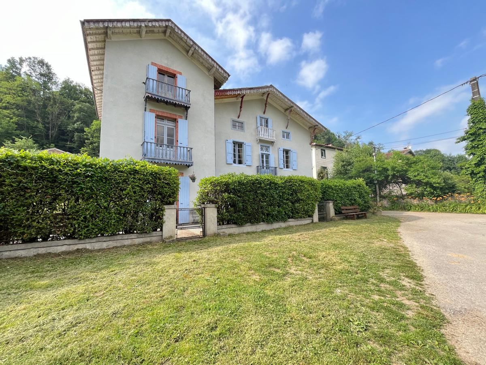
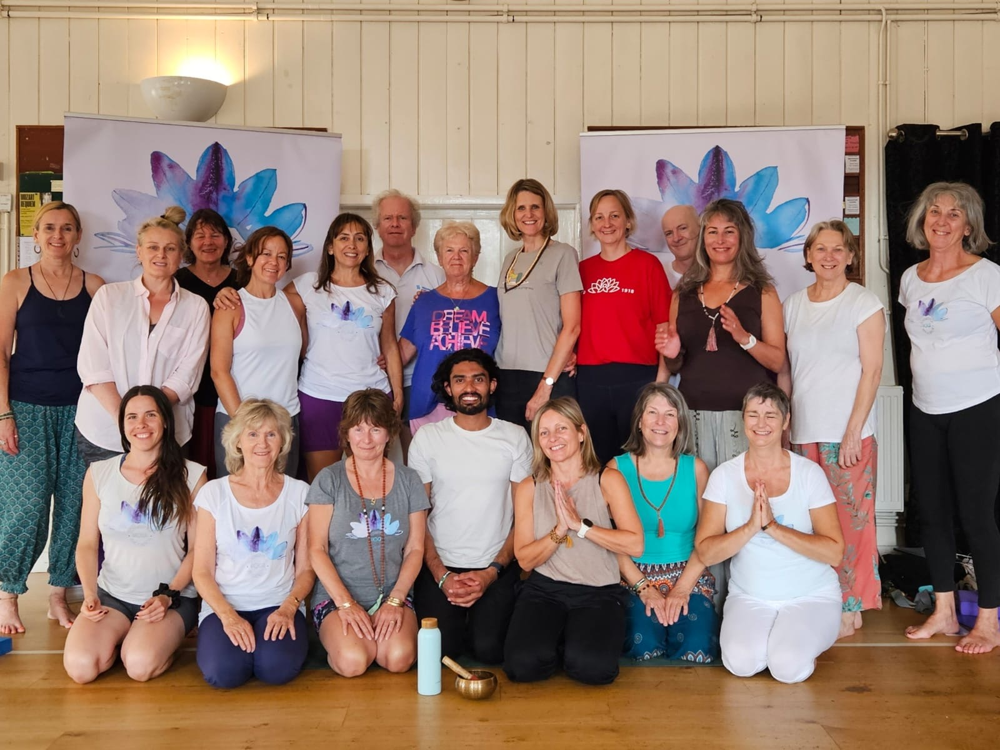

Shared room
At home at Viveka
£700 early bird per person · £750 standard
A place in a room shared with one other guest.
- £200 non-refundable deposit
- Early-bird balance: £500
- Standard balance: £550
Three nights in the French Pyrenees
Yoga for Healthy Backs
With Ankit Kumar & Claire-Louise Symonds · Friday 2–Monday 5 April 2027
Explore rooms & booking Read the retreat brochure (PDF)Le Ballé, Nescus, near Foix, France

Space to explore
A three-night yoga retreat in the French Pyrenees, led by Ankit Kumar of Nurturing Shala, with Claire-Louise co-hosting and teaching. Explore back and spinal wellbeing through attentive movement, alignment, breath awareness and rest, with time to enjoy the surroundings of Viveka Centre for Being.
Our backs support us through the movements of everyday life, yet it can be easy to lose touch with how we sit, stand, breathe and move. Back to Balance offers time to step away from familiar routines and explore these patterns with curiosity, patience and care.
Over three nights at Viveka Centre for Being, Ankit will guide a thoughtful exploration of the relationship between the feet, legs, pelvis and spine. The practice will bring together alignment, supported movement and breath awareness, with props and adaptations where helpful. The emphasis is on understanding your own experience and finding options that work for you.
The retreat also makes room for the quieter side of practice. Breathing, guided relaxation and time for reflection invite you to notice where you hold tension and how physical sensations and emotions are experienced in the body. Alongside movement, there will be space to pause, listen and rest.
The retreat experience
Ankit’s approach to alignment, support and breath will sit alongside Claire-Louise’s experience in somatic yoga, mindfulness and nature connection. Together, they will shape a retreat that balances exploration with rest. The practice includes supported postures, gradual twists, chest opening, breath awareness and Yoga Nidra, with ideas to carry into your own back-care practice.
Shared and private rooms in the house, or bell-tent glamping in the garden, offer different ways to enjoy your stay. Between sessions there is time for shared meals, rest and guided or solo walks around Col de Marrous, Chapelle de St Joseph and Nescus.
Your teachers · Ankit leads, Claire-Louise co-hosts and teaches
Originally from India and now based in Brighton, Ankit Kumar is the yoga teacher behind Nurturing Shala. His exploration of yoga began with a curiosity about himself and the world around him. He holds a Master’s degree in Yoga, with studies spanning Hatha Yoga, anatomy, philosophy and nutrition, and has eight years of teaching experience.
Ankit spent several years learning at the Himalayan Iyengar Yoga Center, founded by Sharat Arora, a long-term student of B.K.S. Iyengar whose distinctive therapeutic approach has influenced his teaching.
His teaching brings traditional yoga principles together with a therapeutic approach, paying particular attention to alignment, breath awareness and mindful movement. Through classes, workshops and individual sessions, he encourages students to explore their own practice, using adaptations and props where helpful.
For Back to Balance, Ankit will lead the exploration of back and spinal wellbeing, combining practical movement with quieter breath and relaxation practices. Southampton Yoga Association’s workshop reviews highlight his attentive guidance, warmth and thoughtful use of props.
Claire-Louise has been teaching yoga since 2007. Her approach combines Scaravelli-inspired and Yin yoga with mindfulness and nature connection, encouraging a gentle exploration of body, mind and heart. Her teaching also draws on Yoga Nidra and body scan practices. She will co-host and teach on Back to Balance at Viveka Centre for Being, bringing a complementary focus on somatic awareness and rest.


The setting
Viveka Centre for Being is in Le Ballé, Nescus, near Foix, in the foothills of the French Pyrenees. The setting offers space for practice and rest, with a dedicated yoga studio and natural surroundings. The retreat runs from Friday 2 to Monday 5 April 2027, for three nights.
Two vegetarian/vegan meals a day are included, cooked by Jon using locally sourced ingredients. No alcohol is served. Please discuss dietary requirements when booking.
The spacious house has a sitting room, a dining room opening onto the terrace and a large kitchen. Outside, enjoy the gardens, meditation hut and two woodlands, including a woodland meditation circle. There is space to relax alone or together.
Make space for yourself
All prices are per person in GBP for 2–5 April 2027. Accommodation, two meals a day, teaching and administration are included. Travel is extra.
Save £50 with early-bird booking through 31 January 2027. Standard prices apply from 1 February.
Shared room
£700 early bird per person · £750 standard
A place in a room shared with one other guest.
Private room
£740 early bird per person · £790 standard
A room in the house all to yourself.
Shared bell tent
£600 early bird per person · £650 standard
Glamping in the garden, sharing with one other guest.
Private bell tent
£660 early bird per person · £710 standard
Your own bell tent in the garden.
Your place at Back to Balance
Select your accommodation to see the full payment breakdown.
Pay a £200 non-refundable deposit for one guest through Stripe. Choose your accommodation again at checkout.
Pay £200 deposit securelyQuestions, dietary requirements or access needs? Contact Ankit before booking.
Plan your journey
Explore Viveka Centre for Being & its events ↗
Viveka Centre for Being is in Le Ballé, Nescus, near Foix. The nearest airport is Toulouse. Shared taxis from the airport can be arranged when guests arrive at similar times; contact us to coordinate.
You can also travel by train to Foix, then arrange the journey to the centre. Check current routes and timetables with your travel provider before booking.


Before you join
All levels of yoga experience are welcome. We’ll ask about injuries and health conditions when you book. This retreat is for people interested in a thoughtful, attentive approach to yoga and back wellbeing. Contact Ankit before booking to discuss your yoga experience, access needs and whether the practice is suitable for you. It is a yoga retreat, not a medical treatment programme.
Please email nurturingshala@gmail.com with any questions about the retreat.
Send a retreat enquiry